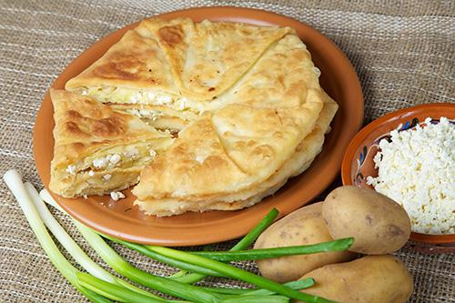
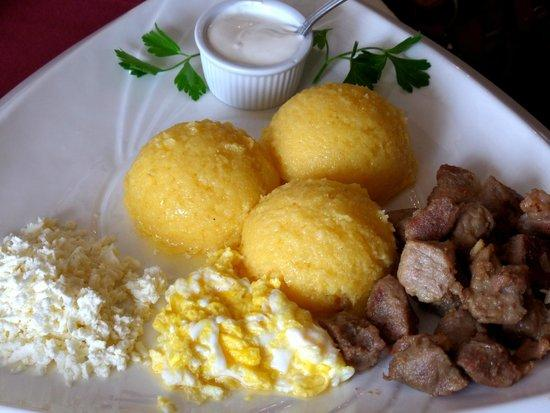
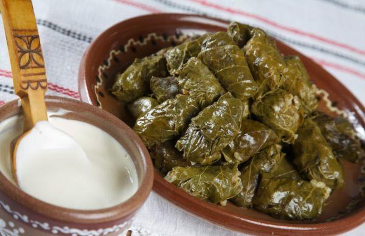
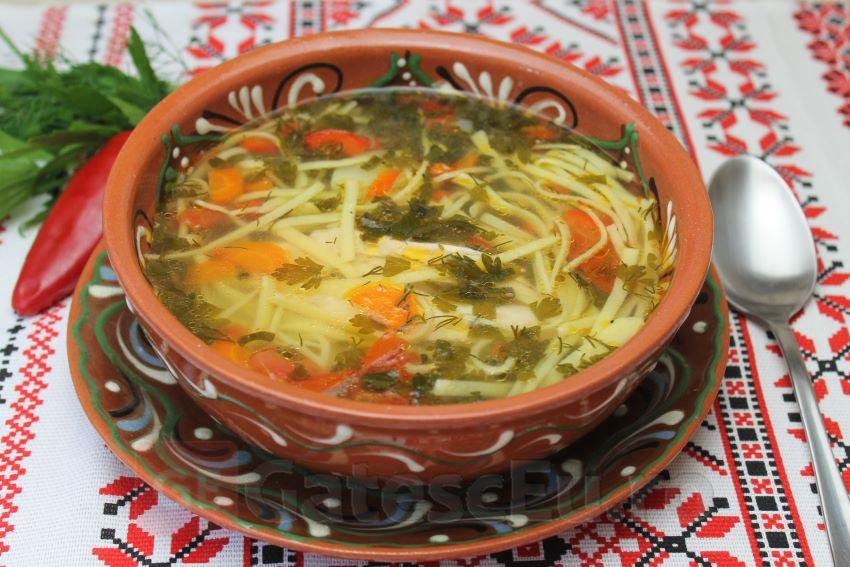
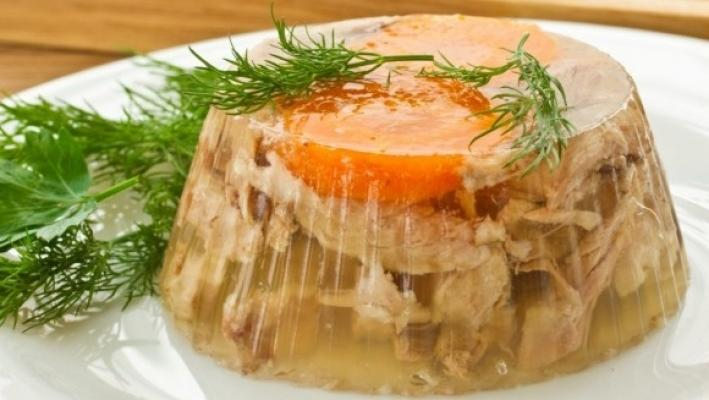
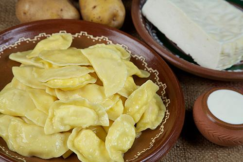
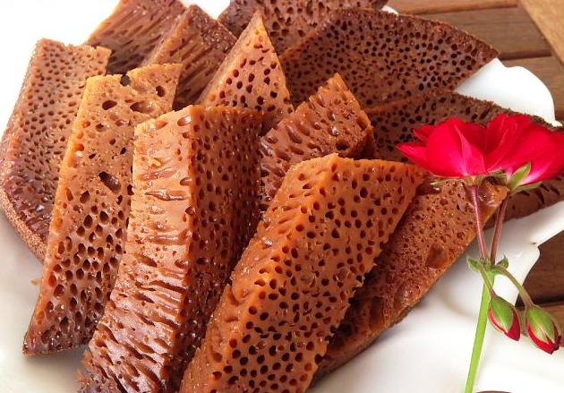
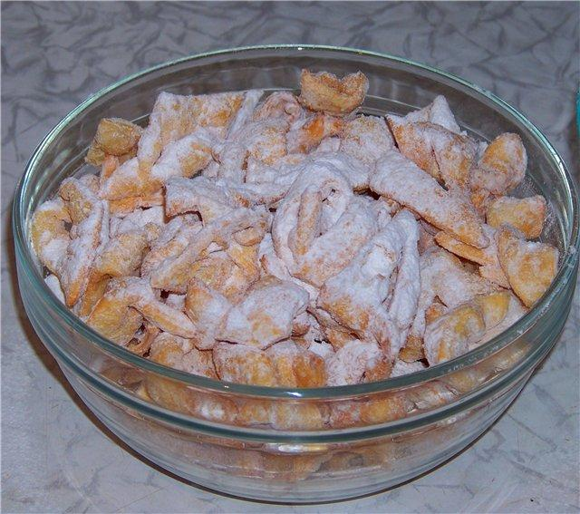
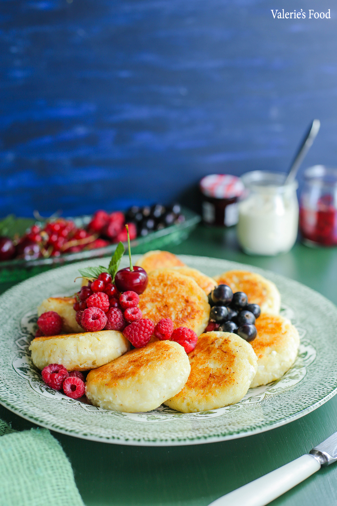

Plăcinte

În Republica Moldova gospodinele fac plăcinte pentru toate gusturile, cu brânză, cu varză, cu
cartofi, cu carne, cu vişine, cu dovleac, cu mere. Cele mai faimoase rămân a fi însă cele cu brânză
de vaci şi cozi de ceapă sau cele cu brânză de oi.
Mămăligă

În mod tradiţional, mămăliga se găteşte într-un vas de fontă cu o formă specială numit ceaun.
Astfel, preparatul capătă o formă rotundă. Mămăliga poate fi mai consistentă sau, dimpotrivă, mai
moale. Se serveşte cu brânză de oi, smântână, jumări, scrob sau chiar cu peşte prăjit şi mujdei.
Unii o preferă înmuiată în zeamă sau lapte, alţii o mănâncă în loc de pâine.
Sarmale

Sarmalele sau găluştele, cum mai sunt numite în unele regiuni, se bucură de o mare popularitate în
Republica Moldova. Sarmalele reprezintă un preparat culinar din carne tocată, de obicei de porc,
amestecată cu orez şi cu alte ingrediente, învelită în foi de varză (proaspătă sau murată) sau de
viţă-de-vie în formă de rulou.
Zeama de pui cu tăiţei de casă

Zeama de pui cu tăiţei de casă este probabil preferata moldovenilor atunci când vine ora prânzului.
Este considerată a fi un remediu bun împotriva răcelii sau mahmurelii şi face parte din tradiţiile
de nuntă ale moldovenilor, întrucât a doua zi după petrecere, mirele invită naşii şi prietenii
apropiaţi „la zeamă”.
Borș scăzut

Vestitul borș scăzut, preparat în mod special de sărbătorile de iarnă, este mâncarea ce amintește de
copilărie. Această mâncare se gătește mai mult în zona de nord a Moldovei. Ingredientele principale
sunt varza murată, oase cu carne de porc sau vită, ceapă, morcovi și pasta de tomate.
Piftie

Piftia nu este un preparat culinar greu de gătit, dar este unul care cere multă răbdare și
respectarea unor reguli stricte. Piftia este un preparat culinar din grupa gustărilor reci obținut
prin fierberea îndelungată a bucăților de carne cu os și cartilaje, în asociere cu legume. La mesele
festive, fiecare gospodină are grijă care ca acest fel de mâncare să fie unul nu doar gustos, dar și
frumos decorat.
Colțunași

Reţeta pentru colţunaşi are mai multe variante, multe dintre ele fiind adaptate de gospodine după
propriile gusturi. Tradiţional, colţunaşii se umplu cu brânză sărată, cartofi dar pot fi umpluţi cu
vişine ori cu carne.
Baba neagră

Baba Neagră- gustul copilăriei sau al mirosului de sat. Este un fel de chec/prăjitură, cu
ingrediente simple și parcă banală la prima vedere, dar nu este chiar așa, culoarea neagra se obține
nu din cacao și colorant, dar din faptul că în timpul procesului de coacere mai lung (4 ore). Acest
desert deosebit era pregătit în special la nunți și cumătrii.
Prăjiței

Un desert simplu, gustos și pudrat. Această gustare dulce este apreciată atât de către cei mici, cât
și de către cei mari. Ingredientele necesare sunt ouă, zahăr, smântână, lapte, făină și vodca sau
coniac.
Păpănași moldovenești

Nu există turist venit în Moldova care sa nu se dea în vant după desertul pufos motat cu smântână și
dulceață. Sarmalele, mamaliguța și păpănașii au devenit un fel de emblemă moldovenească pentru străini
și asta pe bună dreptate.